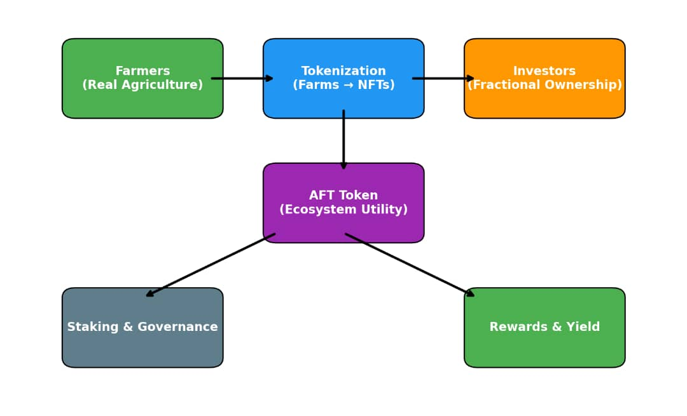

AgricFi Ecosystem Overview
AgricFi combines DeFi, tokenization, and real-world farm verification to create a market for agriculture-backed digital assets.
Farm NFTs
Verified farmland and crop batches minted as NFTs for fractional ownership.
DeFi Pools
Liquidity & yield pools for staking AFT and participating in revenue-sharing.
Marketplace
Buy, sell, and trade farm NFTs or produce tokens in a decentralized marketplace.
IoT Verification
Sensor and satellite feeds verify milestones, recorded immutably on-chain.
Carbon Credits
Sustainable farm practices earn verifiable carbon credits that add revenue streams.
Governance
AFT holders vote on platform decisions via DAO mechanisms.
Ecosystem Flow (Static Overview)
